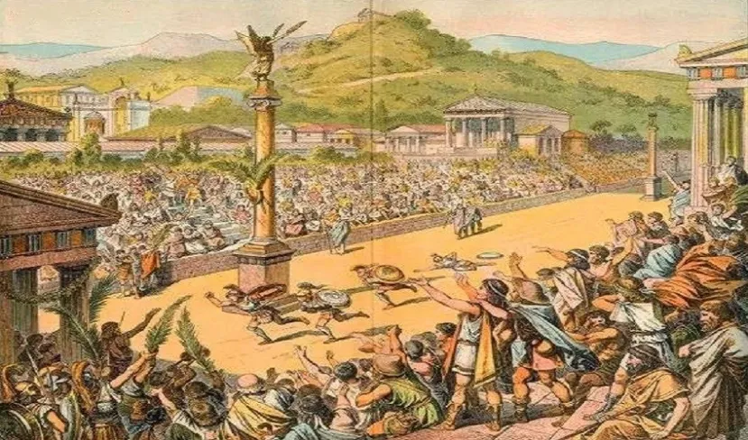
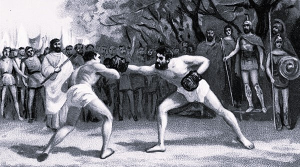

Jocurile Olimpice în Grecia Antică
Jocurile Olimpice din Grecia Antică au fost unele dintre cele mai importante evenimente sportive și religioase ale lumii grecești. Ele se desfășurau în orașul Olympia și erau dedicate zeului Zeus.
Primele jocuri cunoscute au avut loc în anul 776 î.Hr. și se organizau o dată la patru ani. La competiții participau sportivi din toate cetățile grecești.
În timpul desfășurării jocurilor se declara o pace sacră între cetăți, pentru ca sportivii și spectatorii să poată călători în siguranță.
Flacăra olimpică are originea în tradițiile Greciei Antice și simboliza focul sacru al zeilor. În timpul Jocurilor Olimpice antice, o flacără era aprinsă în orașul Olimpia, în cinstea zeului Zeus, și ardea pe toată durata competițiilor. În prezent, această tradiție a fost reluată la Jocurile Olimpice moderne. Flacăra este aprinsă în Olimpia, folosind razele soarelui, iar apoi este purtată de torțe de către sportivi prin mai multe țări până la orașul gazdă al jocurilor. Ea simbolizează pacea, prietenia între popoare și continuitatea spiritului olimpic.
Luptele greco-romane sunt un stil de lupte practicat la nivel global. Acesta a fost contestat la primele Jocuri Olimpice moderne în anul 1896 si a fost inclusă în fiecare ediție a Jocurilor Olimpice de vară organizate de la 1908. Doi luptători sunt marcați de un juriu pentru performanța lor în două perioade de trei minute, luptele ținând de obicei pâna un luptator câștigă două perioade sau atinge scopul suprem de a trântire la sol, „pe spate”, a oponentului. Acest stil de lupte interzice ținutul de sub talie, aceasta fiind diferența majoră între ea și luptele libere, altă forma de lupte de la Jocurile Olimpice.

Jocurile Olimpice

Lupte greco-romane